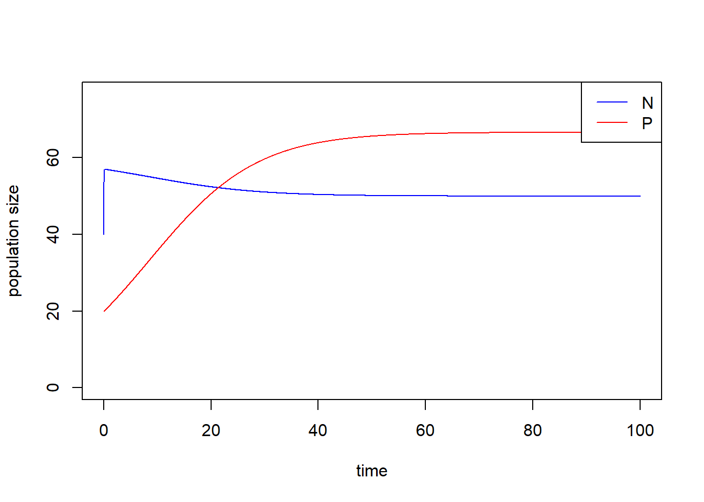
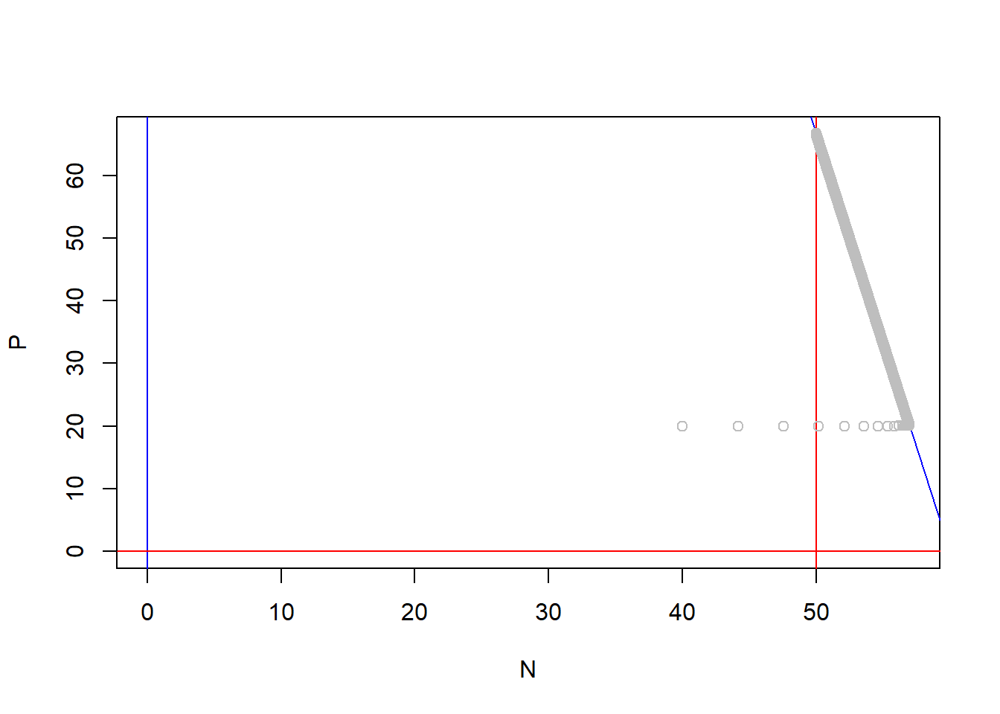
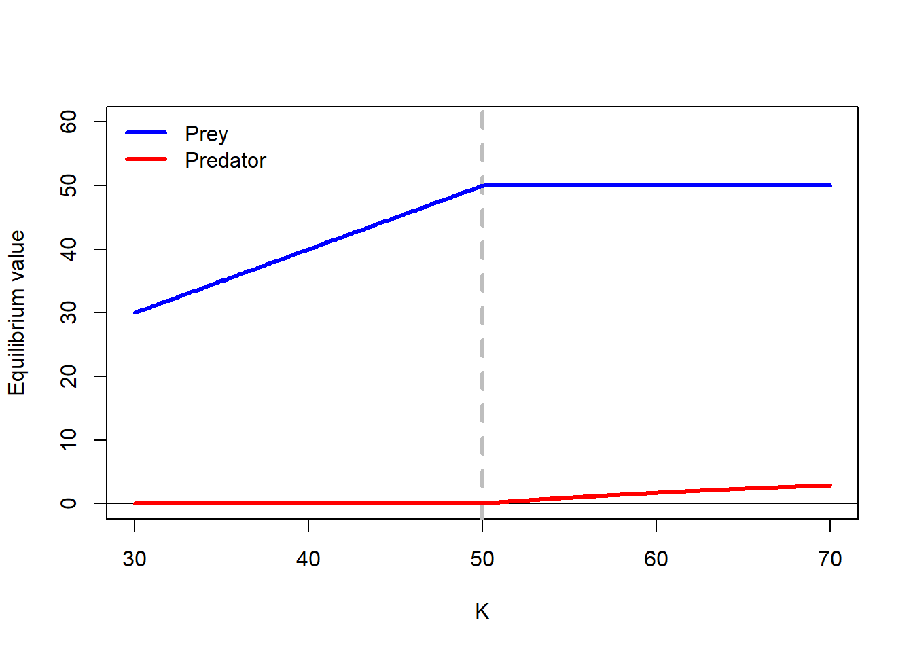

Week 11 - Lotka-Volterra model of predator-prey interactions and time-scale separation
Part 1: analyzing the classic Lotka-Volterra predator-prey model
In this lab, we are going to analyze the classic Lotka-Volterra predator-prey model:
\[\begin{align*} \frac {dN}{dt} &= rN-aNP\\ \frac {dP}{dt} &= eaNP-dP \end{align*}\]
The non-trivial equilibrium of this system is \(E_c = (N = \frac{d}{ea}, P = \frac{r}{a})\).
We simulate the model using the following parameter set (\(N_0\) = 10, \(P_0\) = 2, \(r\) = 1.0, \(a\) = 0.1, \(e\) = 0.8, \(d\) = 0.5) and plot the population trajectories of predator and prey over time. We also show their population dynamics in the state-space diagram.
What will happen if you add a perturbation to the system (i.e., change the initial conditions)? Try out different values of \(N_0\) and \(P_0\) and visualize the differences in the state-space diagram by yourselve.
library(deSolve)
### Model specification
LV_predation_model <- function(times, state, parms) {
with(as.list(c(state, parms)), {
dN_dt = r*N - a*N*P
dP_dt = e*a*N*P - d*P
return(list(c(dN_dt, dP_dt)))
})
}
### Model parameters
times <- seq(0, 100, by = 0.01)
state <- c(N = 10, P = 2)
parms <- c(r = 1.0, a = 0.1, e = 0.8, d = 0.5)
### Model application
pop_size <- ode(func = LV_predation_model, times = times, y = state, parms = parms)
### Visualization -- population dynamics
plot(c(0, max(times)), c(0, max(pop_size[, c("N", "P")] + 10)), type = "n", xlab = "time", ylab = "population size")
lines(N ~ time, data = pop_size, col = "blue") # dynamics of N
lines(P ~ time, data = pop_size, col = "red") # dynamics of P
abline(h = parms[4]/(parms[3] * parms[2]), col = "blue", lty = 2) # equilibrium of N
abline(h = parms[1] / parms[2], col = "red", lty = 2) # equilibrium of P
legend("topright", legend = c("N", "P"), col = c("blue", "red"), lty = 1)### Visualization -- state-space diagram
plot(N ~ P, data = pop_size, type = "l")
points(parms[4]/(parms[3] * parms[2]), parms[1] / parms[2]) # equilibriumWhat is the relationship between the long-term average of the cycle and the originally-expected equilibrium? To calculate long-term average, we need to find out the period of the cycle and then calculate the average population size within a period. The period of the cycle may be derived from the distance between peaks in the dynamics shown above, or by some algorithms, e.g. pracma::findpeaks.
Part 2: Time-scale separation
Time-scale separation is a useful technique to reduce the dimension of the model system, where some state variables are assumed to operate at a much shorter time scale (i.e., fast variables) compared with the others (i.e., slow variables). The fast variables will be attracted rapidly to their new equilibrium in response to a slight change in the slow variables, such that the slow variables can be viewed as “constants” from the perspective of fast variables (and the fast variable will always be at its quasi-equilibrium from the perspective of the slow variable).
Here, we are going to use the Lotka-Volterra model with logistic prey growth to demonstrate the time-scale separation technique:
\[\begin{align*} \frac {dN}{dt} &= rN(1-\frac{N}{K})-aNP\\ \frac {dP}{dt} &= eaNP-dP \end{align*}\]
The ZNGIs of \(N\) are \(N = 0\) and \(r(1-\frac{N}{K}) - aP = 0\) and the ZNGIs of \(P\) are \(P = 0\) and \(eaN = d\) in this model.
We treat prey as a fast variable and predator as a slow variable. First, we find the quasi-equilibrium \(\widehat{N}\) of prey by setting the prey equation to zero:
\[\widehat{N} = K(1-\frac{aP}{r})\]
And then we plug \(\widehat{N}\) into predator equation:
\[\frac {dP}{dt} = (eaK-d)P(1-\frac{eaK(\frac{a}{r})}{eaK-d}P)\]
One simple way to achieve time-scale separation in this model is to increase the prey growth rate so that prey will grow much faster than predator, mimicking the shorter generation time of prey relative to that of predator.
library(deSolve)
Prey_logistic_model <- function(times, state, parms) {
with(as.list(c(state, parms)), {
dN_dt = r*N*(1-(N/K))-a*N*P
dP_dt = e*a*N*P-d*P
return(list(c(dN_dt, dP_dt)))
})
}
times <- seq(0, 100, by = 0.01)
state <- c(N = 40, P = 20)
parms <- c(r = 40, K = 60, a = 0.1, e = 0.1, d = 0.5) # r is chosen to be sufficiently large for time-scale separation
pop_size <- ode(func = Prey_logistic_model, times = times, y = state, parms = parms)Under time-scale separation, population of prey rapidly becomes stable and predator exhibits a logistic growth. We show these by the trajectories of \(P\) and \(N\) over time.
# population trajectories
plot(c(0, max(times)), c(0, max(pop_size[, c("N", "P")] + 10)), type = "n", xlab = "time", ylab = "population size")
lines(N ~ time, data = pop_size, col = "blue") # dynamics of N
lines(P ~ time, data = pop_size, col = "red") # dynamics of P
legend("topright", legend = c("N", "P"), col = c("blue", "red"), lty = 1)
Since \(N\) is a fast variable, it will immediately achieve the its ZNGI on the state-space diagram.
# state-space diagram
plot(c(0, max(pop_size[, "N"])), c(0, max(pop_size[, "P"])), type = "n", xlab = "N", ylab = "P")
abline(v = 0, col = "blue") # ZNGI of N
abline(a = parms[1]/parms[3], b = -parms[1]/(parms[3]*parms[2]), col = "blue") # ZNGI of N
abline(h = 0, col = "red") # ZNGI of P
abline(v = parms[5]/(parms[4]*parms[3]), col = "red") # ZNGI of P
points(P ~ N, data = pop_size, col = "gray")
Play with the growth rate \(r\) from small to large values and see how the trajectory of prey and predator moves along the state-space.
Shiny app is credit to Gen-Chang Hsu
Part 3: Bifurcation diagram for the logistically-growing prey model
Here, we simulate the bifurcation diagram along the prey carrying capacity. Our analytical analyses told us that this model will not end up in a cycle (i.e., the final dynamics are stable equilibria that depend on the parameter value). Therefore, this bifurcation diagram is relatively straightforward: use a for-loop to change the parameter value and record the final state.
# Create vector for K and saving space
Parms.bifurcation <- c(r = 1.0, K = 60, a = 0.1, e = 0.1, d = 0.5)
Times.bifurcation <- seq(0, 1500, by = 1)
State.bifurcation <- c(N = 1, P = 1)
K.vector <- seq(from = 30, to = 70, by = 0.1)
N.sim <- length(K.vector)
Data <- data.frame(K = K.vector,
N.end = rep(0, N.sim),
P.end = rep(0, N.sim))
# Run the simulation for each K within the vector
for(i in 1:N.sim){
# Run the simulation with updated K value
Parms.bifurcation["K"] <- Data$K[i]
Temp <- ode(func = Prey_logistic_model,
times = Times.bifurcation,
y = State.bifurcation,
parms = Parms.bifurcation)
# Since analytical analysis suggests no permanent cycles, simply take last point
Temp <- as.data.frame(Temp)
Data$N.end[i] <- tail(Temp, 1)$N
Data$P.end[i] <- tail(Temp, 1)$P
}
# Plot
plot(c(min(K.vector), max(K.vector)), c(0, max(Data[, c("N.end", "P.end")]) * 1.2),
type = "n", xlab = "K", ylab = "Equilibrium value")
abline(h = 0)
abline(v = Parms.bifurcation[5]/(Parms.bifurcation[4]*Parms.bifurcation[3]), col="grey", lty = 2, lwd = 3)
points(N.end ~ K, Data, type = "l", col = "blue",lty = 1, lwd = 3)
points(P.end ~ K, Data, type = "l", col = "red", lty = 1, lwd = 3)
legend("topleft", c("Prey", "Predator"), col = c("blue", "red"), lwd = 3, lty = 1, bty = "n")